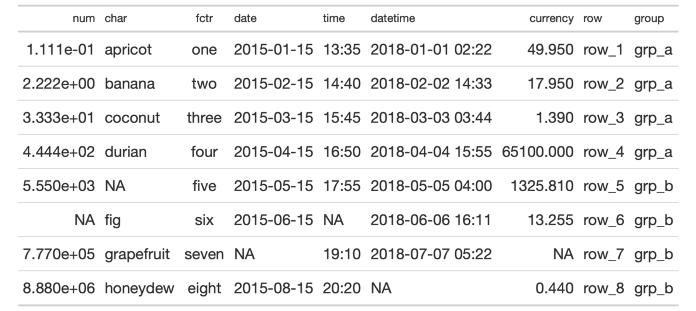

| pct {gt} | R Documentation |
A percentage value acts as a length value that is relative to an initial
state. For instance an 80 percent value for something will size the target
to 80 percent the size of its 'previous' value. This type of sizing is
useful for sizing up or down a length value with an intuitive measure. This
helper function can be used for the setting of font sizes (e.g., in
cell_text()) and altering the thicknesses of lines (e.g., in
cell_borders()). Should a more exact definition of size be required, the
analogous helper function pct() will be more useful.
pct(x)
x |
the numeric value to format as a string percentage for some
|
A character vector with a single value in percentage units.

7-4
Other Helper Functions:
adjust_luminance(),
cell_borders(),
cell_fill(),
cell_text(),
cells_body(),
cells_column_labels(),
cells_column_spanners(),
cells_footnotes(),
cells_grand_summary(),
cells_row_groups(),
cells_source_notes(),
cells_stub_grand_summary(),
cells_stub_summary(),
cells_stubhead(),
cells_stub(),
cells_summary(),
cells_title(),
currency(),
default_fonts(),
escape_latex(),
google_font(),
gt_latex_dependencies(),
html(),
md(),
px(),
random_id()
# Use `exibble` to create a gt table;
# use the `pct()` helper to define the
# font size for the column labels
tab_1 <-
exibble %>%
gt() %>%
tab_style(
style = cell_text(size = pct(75)),
locations = cells_column_labels()
)